Цифровой термометр с полупроводниковым датчиком (диапазон -50 ... +110 0C, разрешение 0.1 0C)
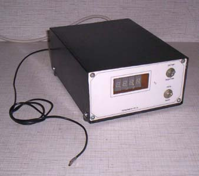
Теория
Прямое напряжение на полупроводниковом диоде линейно уменьшается с повышением температуры p-n перехода [1]. Степень зависимости (коэффициент пропорциональности) определяется материалом, образующим p-n переход. Эту особенность полупроводниковых диодов можно использовать при конструировании датчиков температуры в диапазоне примерно -50 ... +150 0C (для случая кремниевого диода) и даже более широком. Ниже приведен график зависимости напряжения на кремниевом диоде (тип КД522) от его температуры при постоянном протекающем через диод токе.
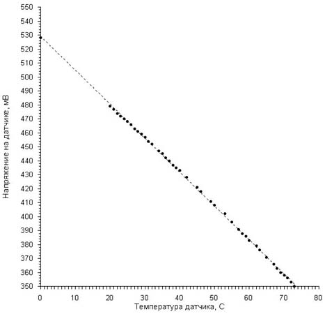
Рис. 1. Зависимость прямого напряжения на кремниевом диоде КД522 от температуры при протекающем токе 100 мкА.
Линейная зависимость для данного конкретного диода в диапазоне температур 0 ... +75 0C описывается уравнением UVD1 = -2.43046 ∙ (T – T0) + 529.09 (напряжение в милливольтах). Коэффициент пропорциональности -2.43046 мВ/ 0C. Среднеквадратичное отклонение равно 0.77424 мВ. Для других диодов значения числовых коэффициентов могут отличаться. Техническими проблемами при разработке электронной схемы термометра являются необходимость достаточно точного и стабильного сдвига прямого падения напряжения на диоде (примерно 530 мВ в соответствии с рис. 1), чтобы обеспечить нулевые показания при температуре 0 0C, и достаточная стабильность усилителя сигнала для получения точности измерений в 0.1 0C. Кроме того, может потребоваться подбор типа диода с достаточно линейной вольт-температурной характеристикой в требуемом диапазоне измерения температуры.
Назначение
Цифровой термометр с полупроводниковым (диодным) датчиком предназначен для оперативного измерения или контроля температуры различных объектов контактным способом. Наличие аналогового выхода с сигналами, соответствующими измеряемой и опорной температуры, позволяет использовать прибор для совместной работы в составе различных установок (например, для термостатирования).
Технические данные
Конструкция
Электрическая принципиальная схема цифрового термометра приведена на рис. 2.
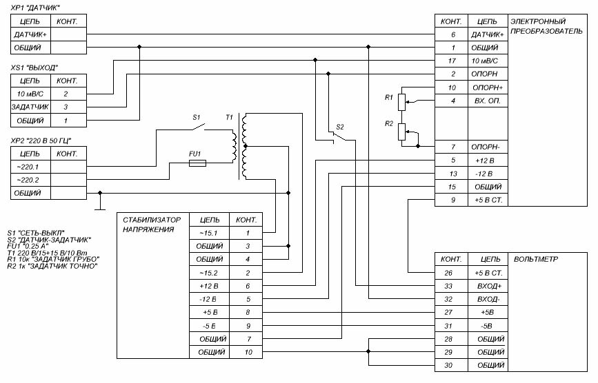
Рис. 2. Схема электрическая принципиальная цифрового термометра с полупроводниковым датчиком.
В качестве датчика цифрового термометра используется полупроводниковый кремниевый диод, сигнал с которого поступает на электронный преобразователь. С выхода электронного преобразователя сигнал, приведенный к уровню 10 мВ/ 0C, поступает на вход вольтметра, а также на внешний разъем XS1 "ВЫХОД" для связи с другими приборами. С помощью переменных резисторов R1R2 устанавливается сигнал, который может выполнять функцию опорной температуры при работе термометра в составе термостата. Питание термометра производится от сети переменного тока (разъем XP2 "220 В 50 ГЦ") через сетевой трансформатор T1. Требуемые для питания узлов термометра напряжения (-5 В, +5 В, -12 В, +12 В) вырабатываются стабилизатором напряжения.
Электрическая принципиальная схема электронного преобразователя приведена на рис. 3.
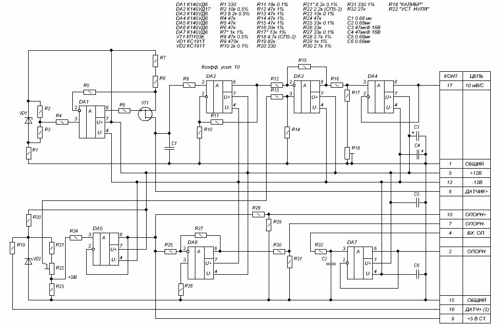
Рис. 3. Схема электрическая принципиальная электронного преобразователя сигнала полупроводникового датчика температуры.
На операционном усилителе (ОУ) DA1 (К140УД6) и полевом транзисторе VT1 (КП103) построен источник тока 100 мкА для питания диодного датчика температуры. Узел на ОУ DA5 (К140УД6) служит для получения стабилизированного напряжения величиной +5 В. Усиленное прецизионным ОУ DA2 (К140УД17) примерно в 10 раз напряжение датчика подается на вычитатель DA3 (К140УД6), к выходу которого подключен буфер DA4 (К140УД6). Каскады на ОУ DA6DA7 (К140УД6) служат для создания опорного выходного сигнала (задатчик температуры для внешних приборов). Все детали электронного преобразователя размещены на одной печатной плате (рис. 4).
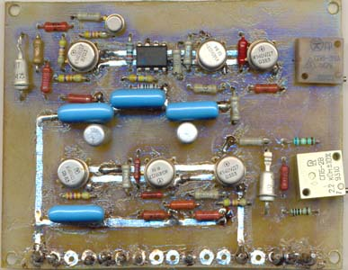
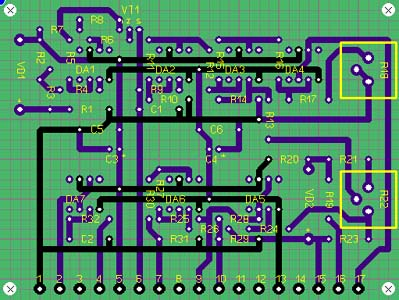
Рис. 4. Печатная плата электронного преобразователя (размер платы 100 х 75 мм2).
На рис. 5 изображена электрическая принципиальная схема цифрового вольтметра с диапазоном измерения 0 ... +1999 мВ.
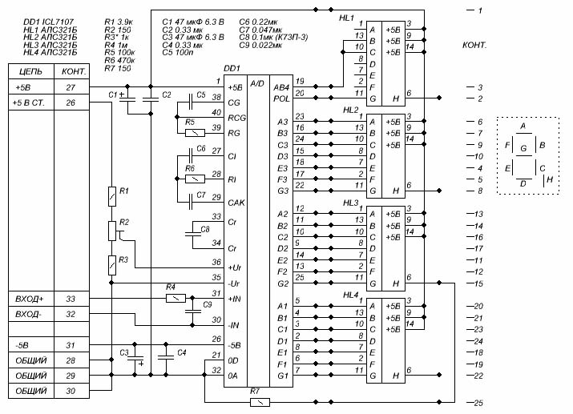
Рис. 5. Схема электрическая принципиальная цифрового вольтметра на диапазон 0 ... +1999 мВ.
Вольтметр собран по типовой схеме [2] на микросхеме DA1 ICL7107 (аналог КР572ПВ2А), которая выполняет функцию аналого-цифрового преобразователя (АЦП) с двойным интегрированием, автоматической коррекцией нуля и определением полярности входного сигнала. К выходу микросхемы непосредственно подключается 3.5-декадное цифровое табло с 7-сегментными светодиодными индикаторами HL1-HL4 типа АЛС321Б (АЛС324Б). Источник опорного напряжения (ИОН) +1000 мВ собран по схеме резистивного делителя R1R2R3, подключаемого к высокостабильному источнику опорного напряжения +5 В СТ., которое поступает с платы электронного преобразователя. Режим работы АЦП определяется параметрами навесных элементов R5, R6, C5 - C8. Измеряемое напряжение подается на контакты ВХОД+, ВХОД- вольтметра. Синфазный потенциал этих контактов может быть произвольным в пределах диапазона питающих напряжений. Цепочка R4C9 образует фильтр нижних частот. Конструктивно вольтметр состоит из двух печатных плат, на одной из которых собран АЦП с навесными элементами (рис. 6), а на другой - цифровое табло (рис. 7). Платы соединяются между собой с помощью кабеля или пайкой в зависимости от конструктивных особенностей прибора, в котором используется вольтметр.
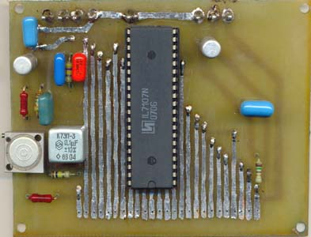 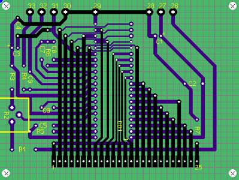
Рис. 6. Печатная плата АЦП цифрового вольтметра (размер платы 100 х 75 мм2).
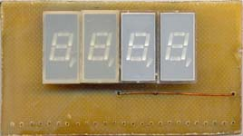
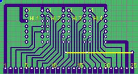
Рис. 7. Печатная плата индикатора цифрового вольтметра (размер платы 65 х 35 мм2).
Для питания электронных узлов прибора служит линейный стабилизатор напряжения (рис. 8), подключаемый к силовому трансформатору с выходным напряжением 2 х 15 В (T1 на рис. 1). Транзисторы VT1 (КТ815), VT2 (КТ814) включены по схеме параметрического стабилизатора и обеспечивают на выходе напряжения +15 и -15 вольт соответственно. Для получения напряжений +5 и -5 вольт используются линейные интегральные стабилизаторы напряжения DA1 (7805), DA2 (7905).
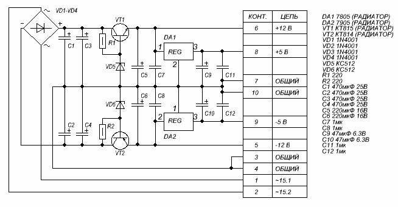
Рис. 8. Схема электрическая принципиальная стабилизатора напряжения.
Печатная плата стабилизатора напряжения показана на рис. 9.
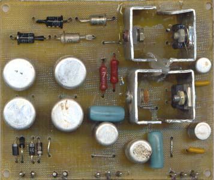 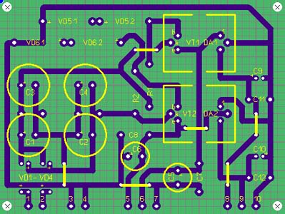
Рис. 9. Печатная плата стабилизатора напряжения (размер платы 100 х 75 мм2).
В качестве датчика температуры (рис. 10, 11) используется кремниевый диод, припаянный к печатным дорожкам на верхней стороне печатной платы размером 15 х 4 мм2 из двухстороннего фольгированного стеклотекстолита. Медная фольга на нижней стороне платы выполняет функцию теплопроводящего электромагнитного экрана, имеющего гальваническую связь с корпусом прибора. Сверху диод защищен эпоксидной смолой с наполнителем, имеющем высокую теплопроводность. Плата соединяется с термометром с помощью кабеля с разъемом.
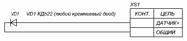
Рис. 10. Схема электрическая принципиальная датчика температуры.
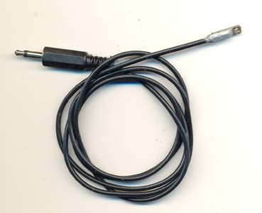
Рис. 11. Внешний вид датчика температуры.
Все узлы термометра смонтированы на плоском основании, органы управления и подключения расположены на передней и задней панелях (рис. 12, 13, 14). Сверху прибор закрывается П-образным кожухом.
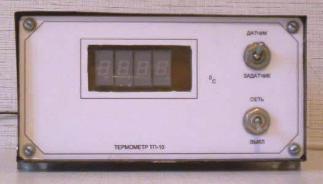
Рис. 12. Термометр (вид со стороны передней панели).
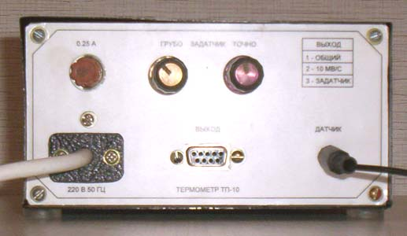
Рис. 13. Термометр (вид со стороны задней панели).
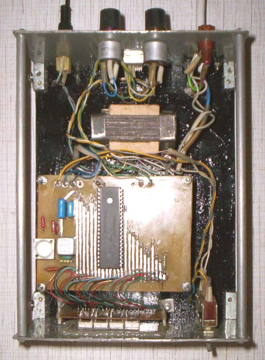
Рис. 14. Термометр (вид сверху со снятым кожухом).
Калибровка термометра
Вначале калибруется цифровой вольтметр термометра (схема рис. 5). Для этого к его входу подключается образцовый вольтметр и источник постоянного напряжения примерно 1.5 В. С помощью потенциометра R2 (рис. 5) показания цифрового вольтметра устанавливаются равными показаниям образцового вольтметра. Для калибровки термометра по температуре используются две температурных точки - опорная и калибровочная. Опорная - точка таяния водяного льда (0 0C). Она используется в самом начале калибровки для установки нулевых показаний термометра. Датчик термометра помещается в термос с тающим водяным льдом, с помощью потенциометра R22 "УСТ. НУЛЯ"электронного преобразователя (рис. 3) устанавливаются нулевые показания прибора. Калибровочная точка выбирается в зависимости от диапазона температур, измерения в котором должны производиться с наилучшей точностью. Например, если наиболее точные измерения нужны в диапазоне температур -20 ... +50 0C, то в качестве калибровочной выбирается точка теплового равновесия вблизи температуры 50 0C. Датчик цифрового термометра помещается совместно с образцовым термометром (с точностью не хуже 0.1 0C) в термос с горячей (около 70 0C) водой. После того, как температура воды по образцовому термометру опустится примерно до 50 0C, с помощью переменного резистора R18 "КАЛИБР" электронного преобразователя (рис. 3) производится установка показаний прибора в соответствии с показаниями образцового термометра.
Примечание
Термометр может использоваться для температурных измерений и в более широком диапазоне температур (в максимальных пределах -199.9 ... +199.9 0C) при использовании кремниевого диода с подходящими свойствами и соответствующей конструкции датчика.
Ссылки:
16.01.2013
Альтернативные источники
энергии
Компьютеры и
Интернет
Магнитные поля
Механотронные системы
Перспективные
разработки
Электроника и технология